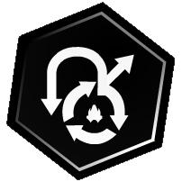

Interface ShipActions
public interface ShipActions
 ACTION FUNCTIONS
This module gathers all functions needed to make the player ship move. You can accelerate or brake, turn or use the boost ability.
This module gathers all functions needed to make the player ship move. You can accelerate or brake, turn or use the boost ability.
- Author:
- Romuald GRIGNON
-
Method Summary
Modifier and Type Method Description voidaccelerateOrBrake(float delta)Increases the current ship speed (or make it brake) (Code Level #--).
When the parameter value is positive, the ship accelerates (and may consume a part of its energy, reducing the battery level).voidmoveAndRecharge(float speed, float minBatteryLevel, float maxBatteryLevel)Moves your ship toward the next checkpoint at the given speed (Code Level #1).
When the battery level is low, the ship will search for the first charging checkpoint and reach it.voidmoveToFirstChargingCheckPoint(float acceleration)This function simply moves the ship toward the first race charging checkpoint, at the given acceleration (Code Level #2).
the first charging checkpoint is the first one in the race order that has the charge ability.voidmoveToNextCheckPoint(float acceleration)This function simply moves the ship toward the next race checkpoint, at the given acceleration (Code Level #2).voidturn(float diffAngle)Turns the ship using a relative angle (Code Level #--).
The parameter can be either negative (turn left) or positive (turn right).voidturnToAngle(float destAngle)Turns your ship to a specific absolute angle (Code Level #8).
Just give the requested angle value, and your ship will turn until it reaches it.voidturnTowardFirstChargingCheckPoint()Turns your ship toward the first checkpoint (in the race order) that has the charging ability (Code Level #3).
It just remains for you to increase speed to reach it.voidturnTowardNextCheckPoint()Turns your ship toward the next checkpoint (Code Level #3).
It just remains for you to increase speed to reach it.voidturnTowardPosition(float x, float y)Turns your ship toward a specific given position (Code Level #7).
Just give the X and Y coordinates in parameter.voidturnTowardPreviousCheckPoint()Turns your ship toward the previous checkpoint (Code Level #3).
It just remains for you to increase speed to reach it.voidturnTowardSecondCheckPoint()Turns your ship toward the checkpoint after the current one (Code Level #3).
It just remains for you to increase speed to reach it.booleanupdateChargingMode(float minBatteryLevel, float maxBatteryLevel)This function will check the battery level and return a boolean value to indicate if we have to charge or not (Code Level #5).
this boolean value is returned according to the min and max level parameters.voiduseBoost()Activates the boost feature (Code Level #--).
The boost is a feature that allows to briefly increase your ship speed without any energy consumption.
-
Method Details
-
accelerateOrBrake
void accelerateOrBrake(float delta)Increases the current ship speed (or make it brake) (Code Level #--).
When the parameter value is positive, the ship accelerates (and may consume a part of its energy, reducing the battery level). When the parameter value is negative, it brakes and restores a part of its kinetic energy into the battery.- Parameters:
delta- a floating value between -1.0 (most powerful brake) and +1.0 (maximum acceleration value). If the value is lower than -1.0 or greater than +1.0, the value will be saturated to respectively -1.0 and +1.0.
-
turn
void turn(float diffAngle)Turns the ship using a relative angle (Code Level #--).
The parameter can be either negative (turn left) or positive (turn right). For each user process function call, the maximum rotation angle is limited to -5/+5 degrees.- Parameters:
diffAngle- the relative rotation angle (in degrees). A positive value makes the ship turn to the right. A negative value makes the ship turn to the left.
-
useBoost
void useBoost()Activates the boost feature (Code Level #--).
The boost is a feature that allows to briefly increase your ship speed without any energy consumption. It will only works if the boost level is at its maximum. If the ship tries to activate the boost feature when the charge is not complete, its speed will be reduced by -0.25f. So be careful the boost charge is ready before calling this function. In order to check if the boost is ready, just call theShipStatus.getShipBoostLevel()function. -
moveAndRecharge
void moveAndRecharge(float speed, float minBatteryLevel, float maxBatteryLevel)Moves your ship toward the next checkpoint at the given speed (Code Level #1).
When the battery level is low, the ship will search for the first charging checkpoint and reach it. When the battery level is high again, the ship will return to the race.- Parameters:
speed- a floating value between -1.0 (most powerful brake) and +1.0 (maximum acceleration value). If the value is lower than -1.0 or greater than +1.0, the value will be saturated to respectively -1.0 and +1.0.minBatteryLevel- a floating value between 0.0 and 100.0 to indicate the minimum percentage level of battery. Below this level, the ship will start to look for a charging checkpoint until it is recharged. Warning this value MUST be LOWER than maxBatteryValue parameter.maxBatteryLevel- a floating value between 0.0 and 100.0 to indicate the maximum percentage level of battery. Beyond this level, the ship will come back into the race until its battery level goes below minBatteryLevel once again. Warning this value MUST be GREATER than minBatteryValue parameter.
-
moveToNextCheckPoint
void moveToNextCheckPoint(float acceleration)This function simply moves the ship toward the next race checkpoint, at the given acceleration (Code Level #2).- Parameters:
acceleration- an acceleration floating value from -1.0 (full brake) to +1.0 (full acceleration).
-
moveToFirstChargingCheckPoint
void moveToFirstChargingCheckPoint(float acceleration)This function simply moves the ship toward the first race charging checkpoint, at the given acceleration (Code Level #2).
the first charging checkpoint is the first one in the race order that has the charge ability.- Parameters:
acceleration- an acceleration floating value from -1.0 (full brake) to +1.0 (full acceleration).
-
turnTowardNextCheckPoint
void turnTowardNextCheckPoint()Turns your ship toward the next checkpoint (Code Level #3).
It just remains for you to increase speed to reach it. -
turnTowardPreviousCheckPoint
void turnTowardPreviousCheckPoint()Turns your ship toward the previous checkpoint (Code Level #3).
It just remains for you to increase speed to reach it. -
turnTowardSecondCheckPoint
void turnTowardSecondCheckPoint()Turns your ship toward the checkpoint after the current one (Code Level #3).
It just remains for you to increase speed to reach it. -
turnTowardFirstChargingCheckPoint
void turnTowardFirstChargingCheckPoint()Turns your ship toward the first checkpoint (in the race order) that has the charging ability (Code Level #3).
It just remains for you to increase speed to reach it. -
turnTowardPosition
void turnTowardPosition(float x, float y)Turns your ship toward a specific given position (Code Level #7).
Just give the X and Y coordinates in parameter.- Parameters:
x- a floating value for the X-axis coordinate.y- a floating value for the Y-axis coordinate.
-
turnToAngle
void turnToAngle(float destAngle)Turns your ship to a specific absolute angle (Code Level #8).
Just give the requested angle value, and your ship will turn until it reaches it.- Parameters:
destAngle- a floating value for the destination angle between 0.0 and 360.0 (in degrees).
-
updateChargingMode
boolean updateChargingMode(float minBatteryLevel, float maxBatteryLevel)This function will check the battery level and return a boolean value to indicate if we have to charge or not (Code Level #5).
this boolean value is returned according to the min and max level parameters.- Parameters:
minBatteryLevel- a floating value between 0.0 and 100.0 to indicate the minimum percentage level of battery. Below this level, the function will return true until it is recharged. Warning this value MUST be LOWER than maxBatteryValue parameter.maxBatteryLevel- a floating value between 0.0 and 100.0 to indicate the maximum percentage level of battery. Beyond this level, the function will return false until its battery level goes below minBatteryLevel once again. Warning this value MUST be GREATER than minBatteryValue parameter.- Returns:
- a boolean value telling if we MUST charge the ship (true) or not (false).
-